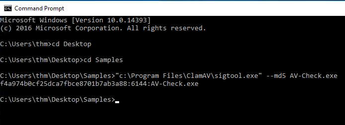
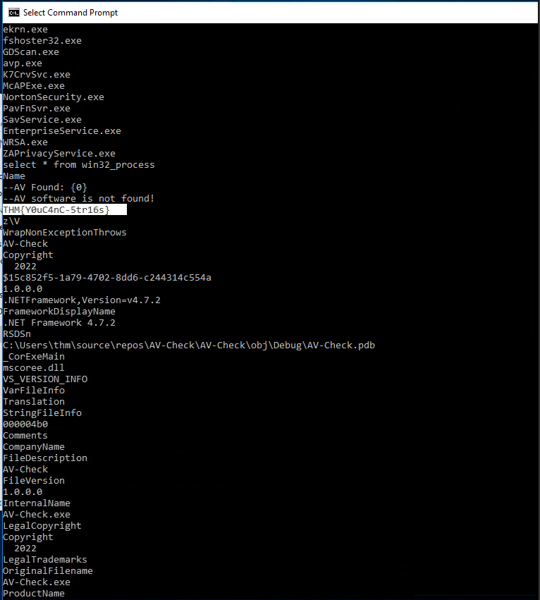

Introduction to Antivirus
AV Static Detection
Static detection is the oldest and simplest approach to antivirus technology. It works by comparing files on disk against a database of predefined signatures. These signatures might be simple byte sequences, unique ASCII strings, cryptographic hashes like MD5 or SHA1, or checksums such as CRC. If the signature of a file matches an entry in the AV’s database, the file is flagged as malicious. This makes static detection very effective against known malware but ineffective against new or modified malware samples. Because of this, signature databases must be updated constantly.
In the ClamAV example, scanning a folder of test samples shows how this works in practice. The EICAR test file is detected by its well-known MD5 hash, and backdoor1.exe is flagged because it contains an identifiable byte sequence of Metasploit shellcode. Backdoor2.exe, however, slips through because the shellcode inside it has been XOR-encrypted, changing the byte pattern so it no longer matches the database. This highlights the weakness of pure signature-based detection: even a small change in a binary alters its hash and byte patterns, defeating static detection.
ClamAV also allows you to create your own database of signatures. By generating an MD5 hash for a missed sample (like backdoor2.exe) and storing it in a custom .hdb file, you can extend the AV’s coverage. Re-scanning with this database correctly identifies the file as malicious. Tools like sigtool automate this process, showing how analysts or defenders can craft signatures for their environment. The limitation, of course, is that adversaries can trivially modify their malware to produce new hashes and patterns.
Yara rules extend static detection with more flexibility. Instead of relying on hashes, Yara lets analysts write custom rules based on text strings, byte patterns, or other unique indicators found inside a file. In the example, a unique path string embedded in AV-Check.exe is used as a detection signature. Running ClamAV with this Yara rule successfully identifies the file but also produces a false positive when the same string appears in a benign text file. Refining the rule by requiring the file to begin with the “MZ” magic number ensures it only applies to executables, eliminating the false positive. This demonstrates both the power and the care required when writing detection rules: more flexible than raw hashes, but also more prone to mistakes if conditions are too broad.
EXERCISES
What is the sigtool tool output to generate an MD5 of the AV-Check.exe binary?

Use the strings tool to list all human-readable strings of the AV-Check binary. What is the flag?

I found the flag by simply typing “strings AV-Check.exe”
AV Testing and Fingerprinting
Testing Environments
When evaluating a payload or suspicious file, red teamers and defenders alike use AV testing environments. The most popular platform is VirusTotal, which scans a submitted file against 70+ AV engines and checks for known malicious indicators. Beyond signature checks, it also runs binaries in a sandboxed environment, analyzing API calls, behaviors, and registry interactions. The trade-off is that VirusTotal shares all submissions with vendors — useful for defenders, but dangerous for red teamers, since it “burns” a payload by contributing it to vendor databases.
To avoid this, alternatives like AntiscanMe (six free scans per day) or Jotti’s Malware Scan provide multi-engine results without automatic vendor sharing. These alternatives often come with daily limits or paid tiers, but they allow safer private testing of malware samples.
Fingerprinting AV Software
On a compromised host, attackers need to know what AV product is running before they can attempt bypasses. Fingerprinting is usually done by looking for artifacts such as process names, services, registry keys, and installation directories. For instance:
Microsoft Defender → MSMpEng.exe, service WinDefend
Kaspersky → avp.exe, service AVP
Bitdefender → bdagent.exe / vsserv.exe, service VSSERV
Avast → AvastSvc.exe / afwServ.exe
Identifying the AV in place allows operators to recreate the same environment in a lab and test bypasses before deploying them in the real target.
Tools for AV Discovery
The write-up highlights two approaches:
SharpEDRChecker: A public C# tool that enumerates possible AV/EDR products by checking processes, DLLs, registry entries, and service names. Because it probes sensitive APIs, it can itself be flagged as malicious by AV solutions.
Custom C# AV-Check Program: A lightweight tool that queries running processes with WMI (select * from win32_process) and checks them against a predefined list of known AV executables. For example, if MSMpEng.exe appears in the process list, it confirms Windows Defender is active.